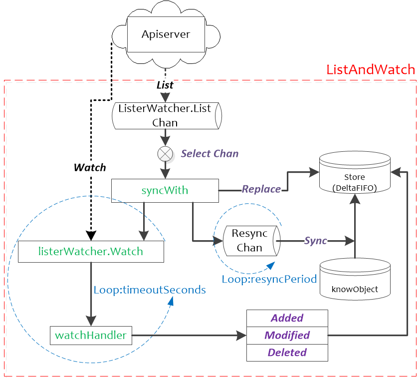
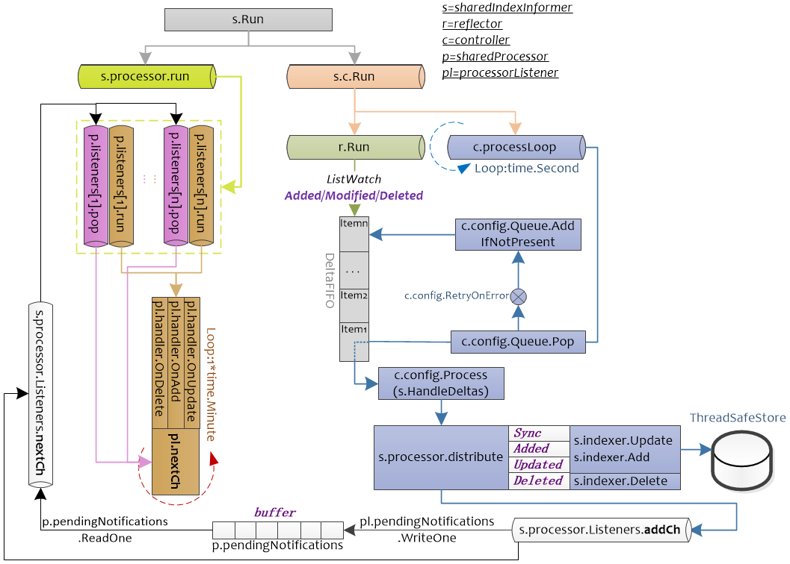

Informer¶
Informer（就是 SharedInformer）可以说是 client-go 中最重要的组成部分。主要由 Reflector、DeltaFIFO、Local Store、WorkQueue 几个组件组成，以下是 Informer 的工作流程：

根据流程图以及前面的知识点串联起来解释一下 Informer 中几个组件的作用：
-
Reflector：称之为反射器，实现对 apiserver 指定类型对象的监控(ListAndWatch)，其中反射实现的就是把监控的结果实例化成具体的对象，最终也是调用 Kubernetes 的 List/Watch API；
-
DeltaIFIFO Queue：一个增量队列，将 Reflector 监控变化的对象形成一个 FIFO 队列，此处的 Delta 就是变化；
-
LocalStore：就是 informer 的 cache，这里面缓存的是 apiserver 中的对象(其中有一部分可能还在DeltaFIFO 中)，此时使用者再查询对象的时候就直接从 cache 中查找，减少了 apiserver 的压力，LocalStore 只会被 Lister 的 List/Get 方法访问。
-
WorkQueue：DeltaIFIFO 收到事件后会先将事件存储在自己的数据结构中，然后直接操作 Store 中存储的数据，更新完 store 后 DeltaIFIFO 会将该事件 pop 到 WorkQueue 中，Controller 收到 WorkQueue 中的事件会根据对应的类型触发对应的回调函数。
- Informer 首先会 list/watch apiserver，Informer 所使用的 Reflector 包负责与 apiserver 建立连接，Reflector 使用 ListAndWatch 的方法，会先从 apiserver 中 list 该资源的全量对象，list 会拿到该对象最新的 resourceVersion，然后使用 watch 方法监听该 resourceVersion 之后的所有变化，若中途出现异常，Reflector 则会从断开的 resourceVersion 处重现尝试监听所有变化，一旦该对象的实例有创建、删除、更新动作，Reflector 都会收到“事件通知”，这时该事件及它对应的资源对象这个组合，被称为增量（Delta），它会被放进 DeltaFIFO 中。
- Informer 会不断地从这个 DeltaFIFO 中读取增量，每拿出一个对象，Informer 就会判断这个增量的事件类型，然后创建或更新本地的缓存，也就是 store。
- 如果事件类型是 Added（添加对象），那么 Informer 会通过 Indexer 的库把这个增量的资源对象保存到本地的缓存中，并为它创建索引，若为删除操作，则在本地缓存中删除该对象。
- DeltaFIFO 再 pop 这个事件到 controller 中，controller 会调用事先注册的 ResourceEventHandler 回调函数进行处理。
- 在 ResourceEventHandler 回调函数中，其实只是做了一些很简单的过滤，然后将关心变更的 Object 放到 workqueue 里面。
- Controller 从 workqueue 里面取出 Object，启动一个 worker 来执行自己的业务逻辑，业务逻辑通常是计算目前集群的状态和用户希望达到的状态有多大的区别，然后孜孜不倦地让 apiserver 将状态演化到用户希望达到的状态，比如为 deployment 创建新的 pods，或者是扩容/缩容 deployment。
- 在 worker 中就可以使用 lister 来获取 resource，而不用频繁的访问 apiserver，因为 apiserver 中 resource 的变更都会反映到本地的 cache 中。
ListWatch¶
Lister 用于获取某个资源的（如 Pod）的全量，Watcher 用于获取某个资源的增量变化。实际上使用中 Lister 和 Watcher 都从 apiserver 获取资源信息，Lister 一般用于首次获取某资源（如 Pod）的全量信息，而 Watcher 用于持续获取该资源的增量变化信息。Lister 和 Watcher 的接口定义如下所示：
// client-go/tools/cache/listwatch.go
// Lister 是知道如何执行初始化列表的任意对象
type Lister interface {
// 根据选项列举对象，ListOptions 定义在 apimachinery 包下面
List(options metav1.ListOptions) (runtime.Object, error)
}
// Watcher 是知道如何在资源上开始watch的任意对象
type Watcher interface {
// 根据选项监控对象变化
Watch(options metav1.ListOptions) (watch.Interface, error)
}
// Lister 和 Watcher 的组合
type ListerWatcher interface {
Lister
Watcher
}可以直接通过 NewListWatchFromClient 函数进行初始化 ListerWatcher：
// client-go/tools/cache/listwatch.go
// NewListWatchFromClient 从指定的 client、资源、namespace 和字段 selector
func NewListWatchFromClient(c Getter, resource string, namespace string, fieldSelector fields.Selector) *ListWatch {
optionsModifier := func(options *metav1.ListOptions) {
options.FieldSelector = fieldSelector.String()
}
// 实现在下面的函数中
return NewFilteredListWatchFromClient(c, resource, namespace, optionsModifier)
}
func NewFilteredListWatchFromClient(c Getter, resource string, namespace string, optionsModifier func(options *metav1.ListOptions)) *ListWatch {
listFunc := func(options metav1.ListOptions) (runtime.Object, error) {
optionsModifier(&options)
return c.Get().
Namespace(namespace).
Resource(resource).
VersionedParams(&options, metav1.ParameterCodec).
Do().
Get()
}
watchFunc := func(options metav1.ListOptions) (watch.Interface, error) {
options.Watch = true
optionsModifier(&options)
return c.Get().
Namespace(namespace).
Resource(resource).
VersionedParams(&options, metav1.ParameterCodec).
Watch()
}
return &ListWatch{ListFunc: listFunc, WatchFunc: watchFunc}
}我们只要知道 ListerWatcher 是通过 apiserver 的 API 来列举和监控的就行了，具体是如何实现的其实当前来看并不重要。需要注意一点：ListerWatcher 是针对某一类对象的，比如 Pod，不是所有对象的，这个在构造ListerWatcher 对象的时候由 apiserver 的 client 类型决定了。比如在 workqueue 的例子中我们就可以看到初始化 ListWatcher 的方法：
// client-go/examples/workqueue/main.go
// create the pod watcher
podListWatcher := cache.NewListWatchFromClient(clientset.CoreV1().RESTClient(), "pods", v1.NamespaceDefault, fields.Everything())clientset.CoreV1().RESTClient() 就是来获取我们的 client 的，不过返回值是一个 Interface 的接口类型：
// client-go/rest/client.go
// Interface 包含于 kubernetes rest api 进行交换的操作集合
type Interface interface {
GetRateLimiter() flowcontrol.RateLimiter
Verb(verb string) *Request
Post() *Request
Put() *Request
Patch(pt types.PatchType) *Request
Get() *Request
Delete() *Request
APIVersion() schema.GroupVersion
}pods 表示我们要获取 Pod 资源的相关数据。这样我们可以获取了可以列举全量 Pod 资源和 Watch Pod 资源增量变化的 ListWatcher 对象了。
Reflector¶
reflector 使用 ListerWatcher 获取资源，并将其保存在 store 中，此处的 store 就是 DeltaFIFO，Reflector 核心处理函数为 ListAndWatch：
// client-go/tools/cache/reflector.go
// Reflector watch 指定的资源并将所有的改变都反射到给定的 store 中
type Reflector struct {
name string // reflector 名称
// metrics tracks basic metric information about the reflector
metrics *reflectorMetrics
expectedType reflect.Type // 反射的类型，也就是要监控的对象类型，比如 Pod
store Store // 存储，也就是 DeltaFIFO
listerWatcher ListerWatcher // 用来从 apiserver 获取资源
period time.Duration // reflector在list和watch的时候理论上是死循环，只有出现错误才会退出
// 这个变量用在出错后多长时间再执行List和Watch，默认是1s
resyncPeriod time.Duration // 重新同步的周期，指的是 shared_informer 使用者需要定期同步全量对象
ShouldResync func() bool // 如果需要同步，调用这个函数询问以下
clock clock.Clock // 时钟
lastSyncResourceVersion string // 最后一次同步的资源版本
lastSyncResourceVersionMutex sync.RWMutex // 最后一次同步资源的锁
WatchListPageSize int64 // 请求初始化和重新同步 watch 列表的请求 chunk 大小，默认为 pager.PageSize
}- listerWatcher 用于获取和监控资源，lister 可以获取对象的全量，watcher 可以获取对象的增量(变化)
- 系统会周期性的执行 list-watch 的流程，一旦过程中失败就要重新执行流程，这个重新执行的周期就是 period 指定的
- expectedType 规定了监控对象的类型，非此类型的对象将会被忽略
- 实例化后的 expectedType 类型的对象会被添加到 store 中
- kubernetes 资源在 apiserver 中都是有版本的，对象的任何除了修改(添加、删除、更新)都会造成资源版本更新，所以 lastSyncResourceVersion 就是指的这个版本
- 如果使用者需要定期同步全量对象，那么 Reflector 就会定期产生全量对象的同步事件给 DeltaFIFO
ListAndWatch 在 Reflector.Run 函数中启动，并以 Reflector.period 周期性进行调度。ListAndWatch 使用 resourceVersion 来获取资源的增量变化：在 List 时会获取资源的首个 resourceVersion 值，在 Watch 的时候会使用 List 获取的 resourceVersion 来获取资源的增量变化，然后将获取到的资源的 resourceVersion 保存起来，作为下一次 Watch 的基线。
// client-go/tools/cache/reflector.go
// Run 开启一个 watch 有 watch 事件的处理器。如果关闭了会重启 watch，stopCh 关闭的时候会退出 Run
func (r *Reflector) Run(stopCh <-chan struct{}) {
klog.V(3).Infof("Starting reflector %v (%s) from %s", r.expectedType, r.resyncPeriod, r.name)
// wait.Until 调用函数 f 会被每 period 周期执行一次
// 意思就是f()函数执行完毕再等period时间后在执行一次，也就是r.ListAndWatch()会被周期性的调用
wait.Until(func() {
if err := r.ListAndWatch(stopCh); err != nil {
utilruntime.HandleError(err)
}
}, r.period, stopCh)
}可以看到这里使用 wait.Until 每隔 period 就会调用一次 ListAndWatch，接下来看这个核心的函数：
// client-go/tools/cache/reflector.go
// ListAndWatch 首先列举所有元素并在调用时获取资源版本，然后使用资源版本进行 watch。
// 如果 ListAndWatch 都没有尝试初始化 watch，将会返回 error
func (r *Reflector) ListAndWatch(stopCh <-chan struct{}) error {
klog.V(3).Infof("Listing and watching %v from %s", r.expectedType, r.name)
var resourceVersion string
// 很多存储类的系统都是这样设计的，数据采用版本的方式记录，数据每变化(添加、删除、更新)都会触发版本更新，
// 这样的做法可以避免全量数据访问。以 apiserver 资源监控为例，只要监控比缓存中资源版本大的对象就可以了，
// 把变化的部分更新到缓存中就可以达到与 apiserver 一致的效果，一般资源的初始版本为0，从0版本开始列举就是全量的对象了
options := metav1.ListOptions{ResourceVersion: "0"}
if err := func() error {
initTrace := trace.New("Reflector " + r.name + " ListAndWatch")
defer initTrace.LogIfLong(10 * time.Second)
var list runtime.Object
var err error
listCh := make(chan struct{}, 1)
panicCh := make(chan interface{}, 1)
go func() {
defer func() {
if r := recover(); r != nil {
panicCh <- r
}
}()
// 如果 listerWatcher 支持，则尝试使用 chunks 的形式收集 list 列表，如果不支持，则第一个列表请求将返回所有的response。
pager := pager.New(pager.SimplePageFunc(func(opts metav1.ListOptions) (runtime.Object, error) {
// 根据opts列举资源，在 apimachery 中实现的
return r.listerWatcher.List(opts)
}))
if r.WatchListPageSize != 0 {
pager.PageSize = r.WatchListPageSize
}
// 如果分页列表调用由于“Expired”错误而失败，则 Pager 将返回完整的列表。
list, err = pager.List(context.Background(), options)
close(listCh)
}()
select {
case <-stopCh:
return nil
case r := <-panicCh:
panic(r)
case <-listCh:
}
if err != nil {
return fmt.Errorf("%s: Failed to list %v: %v", r.name, r.expectedType, err)
}
initTrace.Step("Objects listed")
// 把列举返回的结果转换为对象数组
listMetaInterface, err := meta.ListAccessor(list)
if err != nil {
return fmt.Errorf("%s: Unable to understand list result %#v: %v", r.name, list, err)
}
// 获取资源版本
resourceVersion = listMetaInterface.GetResourceVersion()
initTrace.Step("Resource version extracted")
items, err := meta.ExtractList(list)
if err != nil {
return fmt.Errorf("%s: Unable to understand list result %#v (%v)", r.name, list, err)
}
initTrace.Step("Objects extracted")
// 以上部分都是对象实例化的过程，可以称之为反射，下面是真正从 apiserver 同步过来的全量对象，所以要同步到 DeltaFIFO 中
if err := r.syncWith(items, resourceVersion); err != nil {
return fmt.Errorf("%s: Unable to sync list result: %v", r.name, err)
}
initTrace.Step("SyncWith done")
// 设置最新的同步的对象版本
r.setLastSyncResourceVersion(resourceVersion)
initTrace.Step("Resource version updated")
return nil
}(); err != nil {
return err
}
// 下面要启动一个后台协程实现定期的同步操作，这个同步就是将 SharedInformer 里面的对象全量以同步事件的方式通知使用者
// 我们暂且称之为“后台同步协程”，Run() 函数退出需要后台同步协程退出，所以下面的 cancelCh 就是干这个用的
// 利用 defer close(cancelCh) 实现的，而 resyncerrc 是后台同步协程反向通知 Run() 函数的报错通道
// 当后台同步协程出错，Run() 函数接收到信号就可以退出了
resyncerrc := make(chan error, 1)
cancelCh := make(chan struct{})
defer close(cancelCh)
go func() {
// resyncCh 返回的就是一个定时器，如果resyncPeriod为0那么就会返回一个永久定时器
// cleanup 函数是用来清理定时器的
resyncCh, cleanup := r.resyncChan()
defer func() {
cleanup() // Call the last one written into cleanup
}()
for {
select {
case <-resyncCh:
case <-stopCh:
return
case <-cancelCh:
return
}
// ShouldResync 是一个函数地址，创建反射器对象的时候传入，即便时间到了，也要通过函数问问是否需要同步
if r.ShouldResync == nil || r.ShouldResync() {
klog.V(4).Infof("%s: forcing resync", r.name)
// store 就是 DeltaFIFO，调用 DeltaFIFO.Resync()
// 在这里实现了我们前面提到的同步，从这里看所谓的同步就是以全量对象同步事件的方式通知使用者
if err := r.store.Resync(); err != nil {
resyncerrc <- err
return
}
}
// 清理掉当前的计时器，获取下一个同步时间定时器
cleanup()
resyncCh, cleanup = r.resyncChan()
}
}()
// 前面是列举全量对象，下面是 watch 的逻辑
for {
select {
case <-stopCh:
return nil
default:
}
// 计算 watch 的超时时间
timeoutSeconds := int64(minWatchTimeout.Seconds() * (rand.Float64() + 1.0))
// 设置 watch 的选项，因为前面列举了全量对象，从这里只要监听最新版本以后的资源就可以了
// 如果没有资源变化总不能一直挂着吧？也不知道是卡死了还是怎么了，所以有一个超时会好一点
options = metav1.ListOptions{
ResourceVersion: resourceVersion,
TimeoutSeconds: &timeoutSeconds,
// 要减少 kube-apiserver 在 watch 重启时的负载，可以启用 watch 书签。
AllowWatchBookmarks: false,
}
// 开始监控对象
w, err := r.listerWatcher.Watch(options)
// watch 产生了错误，大部分错误就要退出函数然后再重新来一遍流程
if err != nil {
switch err {
case io.EOF:
case io.ErrUnexpectedEOF:
klog.V(1).Infof("%s: Watch for %v closed with unexpected EOF: %v", r.name, r.expectedType, err)
default:
utilruntime.HandleError(fmt.Errorf("%s: Failed to watch %v: %v", r.name, r.expectedType, err))
}
// 类似于网络拒绝连接的错误要等一会儿再试，因为可能网络繁忙
if urlError, ok := err.(*url.Error); ok {
if opError, ok := urlError.Err.(*net.OpError); ok {
if errno, ok := opError.Err.(syscall.Errno); ok && errno == syscall.ECONNREFUSED {
time.Sleep(time.Second)
continue
}
}
}
return nil
}
// watch 返回的是 stream流， apiserver 会将变化的资源通过这个流发送出来，client-go 最终通过 channel 实现的
// 所以 watchHandler() 是一个需要持续从 channel 读取数据的流程，所以需要传入 resyncerrc 和 stopCh 用于异步通知
// 退出或者后台同步协程错误
if err := r.watchHandler(w, &resourceVersion, resyncerrc, stopCh); err != nil {
if err != errorStopRequested {
klog.Warningf("%s: watch of %v ended with: %v", r.name, r.expectedType, err)
}
return nil
}
}
}上面的函数中，调用了两个私有函数，分别为 syncWith() 和 watchHandler()。syncWith() 用于实现一次从 apiserver 全量对象的同步，这里的同步和我们上面提到的同步不是一回事，这里指的是从 apiserver 的同步。watchHandler 是实现监控 apiserver 资源变化的处理过程，主要就是把 apiserver 的资源变化转换为 DeltaFIFO 调用。我们接下来就看这两个函数的具体实现：
// client-go/tools/cache/reflector.go
// syncWith 用给定的 list 替换 store 中的 items 元素，实现 apiserver 全量对象的同步
func (r *Reflector) syncWith(items []runtime.Object, resourceVersion string) error {
// 实际上就是做一次 slice 类型转换，变成 interface{} 类型
found := make([]interface{}, 0, len(items))
for _, item := range items {
found = append(found, item)
}
// 直接调用 DeltaFIFO 的 Replace() 函数，用于同步全量对象
return r.store.Replace(found, resourceVersion)
}
// 实现从 watch 返回的 channel 中持续读取变化的资源，并转换为 DeltaFIFO 相应的调用
func (r *Reflector) watchHandler(w watch.Interface, resourceVersion *string, errc chan error, stopCh <-chan struct{}) error {
start := r.clock.Now()
eventCount := 0
defer w.Stop()
// 从这里开始无限循环从 channel 中读取资源的变化，也可以理解为资源的增量变化，同时还要监控各种信息
loop:
for {
select {
// 退出信号
case <-stopCh:
return errorStopRequested
// 后台同步协程出错信息
case err := <-errc:
return err
// watch 函数返回的是一个channel，通过这个channel持续读取对象
case event, ok := <-w.ResultChan():
// 如果不OK，说明channel关闭了，就要重新获取
if !ok {
break loop
}
if event.Type == watch.Error {
return apierrs.FromObject(event.Object)
}
// 利用反射实例化对象获取对象类型，判断对象类型是不是我们期望的类型
if e, a := r.expectedType, reflect.TypeOf(event.Object); e != nil && e != a {
utilruntime.HandleError(fmt.Errorf("%s: expected type %v, but watch event object had type %v", r.name, e, a))
continue
}
// 和list操作相似，也要获取对象的版本，要更新缓存中的版本，下次 watch 就可以忽略这些资源了
meta, err := meta.Accessor(event.Object)
if err != nil {
utilruntime.HandleError(fmt.Errorf("%s: unable to understand watch event %#v", r.name, event))
continue
}
// 获取对象的版本
newResourceVersion := meta.GetResourceVersion()
// 根据事件的类型做不同的 DeltaFIFO 的操作
switch event.Type {
// 向 DeltaFIFO 添加一个 Add 的 Delta
case watch.Added:
err := r.store.Add(event.Object)
if err != nil {
utilruntime.HandleError(fmt.Errorf("%s: unable to add watch event object (%#v) to store: %v", r.name, event.Object, err))
}
// 向 DeltaFIFO 添加一个 Update 的 Delta
case watch.Modified:
err := r.store.Update(event.Object)
if err != nil {
utilruntime.HandleError(fmt.Errorf("%s: unable to update watch event object (%#v) to store: %v", r.name, event.Object, err))
}
// 删除对象，向 DeltaFIFO 添加一个删除的 Delta
case watch.Deleted:
err := r.store.Delete(event.Object)
if err != nil {
utilruntime.HandleError(fmt.Errorf("%s: unable to delete watch event object (%#v) from store: %v", r.name, event.Object, err))
}
case watch.Bookmark:
// Bookmark 意味着 watch 已经在这里同步，只需要更新 resourceVersion
default:
utilruntime.HandleError(fmt.Errorf("%s: unable to understand watch event %#v", r.name, event))
}
// 更新最新资源版本
*resourceVersion = newResourceVersion
// 设置最新同步的资源版本
r.setLastSyncResourceVersion(newResourceVersion)
eventCount++
}
}
// watch返回时间非常短而且没有任何事件要处理，这个属于异常现象，因为我们watch是设置了超时的
watchDuration := r.clock.Since(start)
if watchDuration < 1*time.Second && eventCount == 0 {
return fmt.Errorf("very short watch: %s: Unexpected watch close - watch lasted less than a second and no items received", r.name)
}
klog.V(4).Infof("%s: Watch close - %v total %v items received", r.name, r.expectedType, eventCount)
return nil
}然后是上面更新资源版本的函数实现：
// client-go/tools/cache/reflector.go
func (r *Reflector) setLastSyncResourceVersion(v string) {
r.lastSyncResourceVersionMutex.Lock()
defer r.lastSyncResourceVersionMutex.Unlock()
// 设置已经获取到资源的最新版本
r.lastSyncResourceVersion = v
rv, err := strconv.Atoi(v)
if err == nil {
r.metrics.lastResourceVersion.Set(float64(rv))
}
}
// 获取 resync 定时器，叫定时器比较好理解，叫chan很难和定时关联起来
func (r *Reflector) resyncChan() (<-chan time.Time, func() bool) {
// 如果 resyncPeriod 说明就不用定时同步，返回的是永久超时的定时器
if r.resyncPeriod == 0 {
return neverExitWatch, func() bool { return false }
}
// 构建一个定时器
t := r.clock.NewTimer(r.resyncPeriod)
return t.C(), t.Stop
}完整的 ListAndWatch 流程如下图所示： 
上图中的 Resync 触发的 Sync 动作，其作用与 Replace 中的第三步相同，用于将 knowObject 中的对象与 DeltaFIFO 中同步。这种操作是有必要的。
最后，我们再次对 Reflector 做一下总结：
- Reflector 利用 apiserver 的 client 列举全量对象（版本为0以后的对象全部列举出来）
- 将全量对象采用 Replace() 接口同步到 DeltaFIFO 中，并且更新资源的版本号，这个版本号后续会用到
- 开启一个协程定时执行 resync，如果没有设置定时同步则不会执行，同步就是把全量对象以同步事件的方式通知出去
- 通过 apiserver 的 client 监控(watch)资源，监控的当前资源版本号以后的对象，因为之前的都已经全量获取到了
- 一旦有对象发生变化，那么就会根据变化的类型（新增、更新、删除）调用 DeltaFIFO 的相应接口，产生一个相应的对象 Delta，同时更新当前资源的版本
Controller¶
这里的 controller 和我们理解的 controller-manager 下面的各种控制器不一样，这里的 controller 定义在 client-go/tools/cache/controller.go 中，目的是用来把 Reflector、DeltaFIFO 组合起来形成一个相对固定的、标准的处理流程。Controller 的结构如下，其包含一个配置变量 config，在注释中可以看到 Config.Queue 就是 DeltaFIFO。Controller 定义了如何调度Reflector：
// client-go/tools/cache/controller.go
type Controller interface {
Run(stopCh <-chan struct{}) // 核心流程函数
HasSynced() bool // apiserver 中的对象是否已经同步到 Store 中
LastSyncResourceVersion() string // 最新的资源版本号
}从上面定义来看，HasSynced() 可以调用 DeltaFIOFO.HasSynced() 实现，LastSyncResourceVersion() 可以通过 Reflector 实现，因为 Controller 把多个模块整合起来实现一套逻辑，所以创建 Controller 需要提供一些配置：
// client-go/tools/cache/controller.go
// Config 包含一个 Controller 的所有设置
type Config struct {
Queue // 实际上就是 DeltaFIFO
ListerWatcher // 用于列举和监听对象的属性，用来构造 Reflector
Process ProcessFunc // 在调用 DeltaFIFO.Pop() 使用，弹出对象要如何处理
ObjectType runtime.Object // 对象类型
FullResyncPeriod time.Duration // 全量同步周期，在 Reflector 使用
ShouldResync ShouldResyncFunc // Reflector 在全量更新的时候会调用该函数询问
RetryOnError bool // 错误是否需要重试
}从上面两个类型的定义我们可以猜测：Controller 自己构造 Reflector 获取对象，Reflector 作为 DeltaFIFO 生产者持续监控 apiserver 的资源变化并推送到队列中。Controller 的 Run() 应该是队列的消费者，从队列中弹出对象并调用 Process() 处理。所以 Controller 相比于 Reflector因为队列的加持表现为每次有资源变化就会调用一次使用者定义的处理函数。
Controller 的框架比较简单它使用 wg.StartWithChannel 启动 Reflector.Run，相当于启动了一个 DeltaFIFO 的生产者(wg.StartWithChannel(stopCh, r.Run)表示可以将 r.Run 放在独立的协程运行，并可以使用 stopCh 来停止 r.Run)；使用 wait.Until 来启动一个消费者 (wait.Until(c.processLoop, time.Second, stopCh) 表示每秒会触发一次 c.processLoop，但如果 c.processLoop 在1秒之内没有结束，则运行 c.processLoop 继续运行，不会结束其运行状态):
// client-go/tools/cache/controller.go
// controller 是一个通用的控制器框架。
type controller struct {
config Config // controller的配置
reflector *Reflector // 反射器指针
reflectorMutex sync.RWMutex // 反射器的锁
clock clock.Clock // 时钟
}
// Run 开始处理 items，直到一个值被发送到 stopCh，多次调用 Run 是错误的，Run 函数是阻塞的，需要通过 go 调用
func (c *controller) Run(stopCh <-chan struct{}) {
defer utilruntime.HandleCrash()
// 创建一个协程，如果收到系统退出的信号就关闭队列
go func() {
<-stopCh
c.config.Queue.Close()
}()
// 实例化 Reflector
r := NewReflector(
c.config.ListerWatcher,
c.config.ObjectType,
c.config.Queue,
c.config.FullResyncPeriod,
)
r.ShouldResync = c.config.ShouldResync
r.clock = c.clock
// 记录 reflector
c.reflectorMutex.Lock()
c.reflector = r
c.reflectorMutex.Unlock()
// 被waitGroup管理的协程都退出后调用 Wait() 才会退出，否则就会被阻塞
var wg wait.Group
defer wg.Wait()
// 放在独立的协程运行，调用 reflector 的 Run 函数，也就是去 ListAndWatch
wg.StartWithChannel(stopCh, r.Run)
// 周期性的调用 c.processLoop
wait.Until(c.processLoop, time.Second, stopCh)
}processLoop 的框架也很简单，它运行了 DeltaFIFO.Pop 函数，用于消费 DeltaFIFO 中的对象，并在 DeltaFIFO.Pop 运行失败后可能重新处理该对象（AddIfNotPresent）:
// client-go/tools/cache/controller.go
func (c *controller) processLoop() {
for {
// 从队列中弹出一个对象，然后处理它，这才是最主要的部分，这个c.config.Process是构造Controller的时候通过 Config 传进来的
// 这个函数其实是ShareInformer传进来的，所以在分析 SharedInformer 的时候要重点分析的
obj, err := c.config.Queue.Pop(PopProcessFunc(c.config.Process))
if err != nil {
// 如果FIFO关闭了那就退出
if err == FIFOClosedError {
return
}
if c.config.RetryOnError {
// 重新入队列的safe方法
c.config.Queue.AddIfNotPresent(obj)
}
}
}
}ShareInformer¶
下图为 SharedInformer 的运行图。可以看出 SharedInformer 启动了 controller，reflector，并将其与 Indexer 结合起来。
注：不同颜色表示不同的 channel，相同颜色表示在同一个 channel 中的处理

ShareInformer 的结构定义如下所示：
// client-go/tools/cache/shared_informer.go
type SharedInformer interface {
// 添加资源事件处理器，相当于注册回调函数，当有资源变化就会通过回调通知使用者
AddEventHandler(handler ResourceEventHandler)
// 上面添加的是不需要周期同步的处理器，下面的接口添加的是需要周期同步的处理器
AddEventHandlerWithResyncPeriod(handler ResourceEventHandler, resyncPeriod time.Duration)
// 获取 Store 对象
GetStore() Store
// 获取 Controller 对象
GetController() Controller
// 核心逻辑实现的函数
Run(stopCh <-chan struct{})
// 因为有 Store， 这个函数就是告知使用者 Store 里面是否已经同步了 apiserver 的资源，这个接口很有用
// 当创建完 SharedInformer 后，通过 Reflector 从 apiserver 同步全量对象，然后再通过 DeltaFIFO 一个一个通知到 cache
// 这个接口就是告知使用者，全量的对象是不是已经同步到了 cache，这样就可以从 cache 列举或者查询了
HasSynced() bool
// 最新同步资源的版本，通过 Controller 实现
LastSyncResourceVersion() string
}
// 扩展 SharedInformer，从名字上看共享的是 Indexer，Indexer 也是一种 Store 的实现
type SharedIndexInformer interface {
SharedInformer // 继承 SharedInformer
// 扩展 Indexer 的接口
AddIndexers(indexers Indexers) error
GetIndexer() Indexer
}
// client-go/tools/cache/controller.go
// SharedInformer 使用者如果需要处理资源的事件，那么就要自己实现相应的回调函数
type ResourceEventHandler interface {
OnAdd(obj interface{}) // 添加对象
OnUpdate(oldObj, newObj interface{}) // 更新对象
OnDelete(obj interface{}) // 删除
}然后来看下 SharedInformer 的具体实现类的定义：
// client-go/tools/cache/shared_informer.go
type sharedIndexInformer struct {
// Indexer 也是一种 Store，Controller 负责把 Reflector 和 FIFO 逻辑串联起来
// 所以这两个变量就涵盖了 Reflector、DeletaFIFO 和 LocalStore（cache）
indexer Indexer
controller Controller
// sharedIndexInformer 把上面的 ResourceEventHandler 进行了一层封装，并统一由 sharedProcessor 管理
processor *sharedProcessor
cacheMutationDetector CacheMutationDetector
// 这两个变量是给 Reflector 使用的，Reflector 是在 Controller 中创建的
listerWatcher ListerWatcher
objectType runtime.Object
// 定期同步的周期，因为可能存在多个 ResourceEventHandler，就有可能存在多个同步周期，sharedIndexInformer 采用最小的周期
// 这个周期值就存储在 resyncCheckPeriod 中，通过 AddEventHandler() 添加的处理器都采用 defaultEventHandlerResyncPeriod
resyncCheckPeriod time.Duration
defaultEventHandlerResyncPeriod time.Duration
clock clock.Clock // 时钟
// 启动、停止标记，肯定有人会问为啥用两个变量，一个变量不就可以实现启动和停止了么？
// 其实此处是三个状态，启动前，已启动和已停止，start表示了两个状态，而且为启动标记专门做了个锁
// 说明启动前和启动后有互斥的资源操作
started, stopped bool
startedLock sync.Mutex
// 因为 DeltaFIFO 每次 Pop() 的时候需要传入一个函数用来处理 Deltas
// 处理 Deltas 也就意味着要把消息通知给处理器，如果此时调用了 AddEventHandler()
// 就会存在崩溃的问题，所以要有这个锁，阻塞 Deltas
blockDeltas sync.Mutex
}sharedProcessor¶
首先需要知道 Processor 的定义，这里定义的 Processor 就是处理事件的东西。什么事件，就是 SharedInformer 向外部通知的事件。我们还要了解一个新的类型，那就是 processorListener!
通过 SharedInformer.AddEventHandler() 添加的处理器最终就会封装成 processorListener，然后通过 sharedProcessor 管理起来，通过processorListener 的封装就可以达到所谓的有事处理，没事挂起。
processorListener 可以理解为两个核心功能，一个是 processor，一个是 listener，用一句话概括，有事做事没事挂起。先看看processorListener 的定义：
// clien-go/tools/cache/shared_informer.go
type processorListener struct {
// nextCh、addCh、handler、pendingNotifications 这四个变量实现了事件的输入、缓冲、处理，事件就是 apiserver 资源的变化
nextCh chan interface{}
addCh chan interface{}
handler ResourceEventHandler
pendingNotifications buffer.RingGrowing
// 下面四个变量就是跟定时同步相关的了，requestedResyncPeriod 是处理器设定的定时同步周期
// resyncPeriod 是跟 sharedIndexInformer 对齐的同步时间，因为 sharedIndexInformer 管理了多个处理器
// 最终所有的处理器都会对齐到一个周期上，nextResync 就是下一次同步的时间点
requestedResyncPeriod time.Duration
resyncPeriod time.Duration
nextResync time.Time
resyncLock sync.Mutex
}我们需要知道就是 processor 如何接收事件（此处事件就是 apiserver 的资源变化，也就是 DeltaFIFO 输出的 Deltas）？如何通知事件处理器？如何缓冲处理器？如何阻塞处理器进而形成 listener 的？一系列的问题我们需要沿着处理逻辑的流程逐一解释。第一个问题，事件是如何传入的:
// client-go/tools/cache/shared_informer.go
// 对，通过 addCh 传入，这里面的 notification 就是我们所谓的事件
func (p *processorListener) add(notification interface{}) {
p.addCh <- notification
}因为 addCh 是无缓冲 channel，调用 add() 函数的人是事件分发器。意思就是从 DeltaFIFO 弹出的 Deltas 要逐一送到多个处理器，此时如果处理器没有及时处理会造成 addCh 把分发器阻塞，那别的处理器也就同样无法收到新的事件了。这一点，processorListener 利用一个后台协程处理这个问题：
// client-go/tools/cache/shared_informer.go
func (p *processorListener) pop() {
defer utilruntime.HandleCrash()
defer close(p.nextCh) // Tell .run() to stop
// 临时变量
var nextCh chan<- interface{}
var notification interface{}
// 进入死循环
for {
select {
// 两种情况，nextCh 还没有初始化，这个语句就会被阻塞
// nextCh 后面赋值为 p.nextCh，因为 p.nextCh 也是无缓冲的 channel，数据不发送成功就阻塞
case nextCh <- notification:
// 如果发送成功了，那就从缓冲中再取一个事件出来
var ok bool
notification, ok = p.pendingNotifications.ReadOne()
if !ok { // Nothing to pop
// 如果没有事件，那就把 nextCh 再次设置为 nil，接下来对于 nextCh 操作还会被阻塞
nextCh = nil // Disable this select case
}
// 从 p.addCh 读取一个事件出来
case notificationToAdd, ok := <-p.addCh:
// p.addCh关闭了，只能退出了
if !ok {
return
}
// notification 为空说明当前还没有发送任何事件给处理器
if notification == nil { // No notification to pop (and pendingNotifications is empty)
// 把刚刚获取的事件通过 p.nextCh 发送给处理器
notification = notificationToAdd
nextCh = p.nextCh
} else { // There is already a notification waiting to be dispatched
// 上一个事件还没有发送成功，那就先放到缓存只能够
p.pendingNotifications.WriteOne(notificationToAdd)
}
}
}
}pop()函数实现的非常巧妙，利用一个协程就把接收、缓冲、发送全部解决了。它充分的利用了 golang 的 select 可以同时操作多个 channel 的特性，同时从 addChd 读取数据从 nextCh 发送数据，这两个 channel 任何一个完成都可以激活协程。接下来，我们看看从nextCh读取事件后是如何处理的：